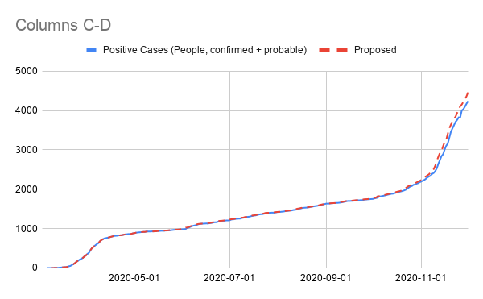
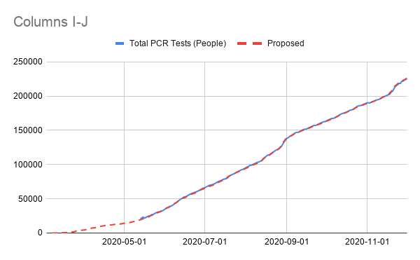

[VT] changes to VT's Positive (confirmed + probable) and Totals
Issue number 991
karaschechtman opened this issue on December 2, 2020 at 10:32 am
Labels Data quality
State or US: VT
Describe the problem Vermont is adding ~120 probables since September to its counts today, which previously were only confirmed. https://www.healthvermont.gov/sites/default/files/documents/pdf/Covid-19-Daily-Update.pdf They provide a cases timeseries where those probables are distributed over the full timeseries, so we are backfilling Positive so it doesn’t appear as if cases rose by an additional 120 today.
As a bonus, we’re also backfilling Total PCR Tests (People) with a by-result timeseries so that we can get more history — we only have it back to May but this will get us back to March.
Link to data source https://geodata.vermont.gov/datasets/vt-covid-19-daily-counts-table
We have a time series for probable cases. Updating positives (lumped), confirmed & probables. Multi-edit tool-PRODUCTION - VT-reb-20201204.csv.txt Multi-edit tool-PRODUCTION - VT-reb-20201204_post.csv.txt
 